راهنمای کاربری تصویری و مرحلهبهمرحله
راهاندازی و تنظیمات پایه آسود ERP
از ورود و داشبورد تا کارتابل، ساخت سازمان، دورههای مالی، نمودار حسابها و تفصیلی شناور
نسخه مستند: ۱۴۰۵/۰۵ • مناسب مدیر سیستم و مدیر حسابداری
راهنمای مطالعه
فهرست صفحات
ترتیب این سند مطابق مسیر واقعی کاربر در سامانه تنظیم شده است.
ورود و انتخاب زمینه فعال ۳
داشبورد اصلی و ریبون ۴
کارتابل و گردش تأیید ۵–۱۰
ورود به تنظیمات پایه ۱۱
داشبورد تنظیمات ۱۲
انتخاب نوع واحد سازمانی ۱۳
ایجاد هلدینگ ۱۴
ایجاد شرکت حقوقی ۱۵–۱۶
ایجاد شخص حقیقی ۱۷
ایجاد شعبه ۱۸–۱۹
مشاهده ساختار سازمانی ۲۰
تنظیمات عمومی مالی ۲۱
سال مالی و دوره مالی ۲۲–۲۳
قفل و بازگشایی دوره ۲۴
نمودار و فرم حساب ۲۵–۲۶
تفصیلی شناور ۲۷–۲۹
وضعیت صفحات بعدی ۳۰
چکلیست استفاده روزانه ۳۱
نشانه وضعیت:
عملیاتی
صفحه به API متصل است.
طراحی بعدی
تصویر آماده است ولی اجرای کامل در برش بعدی است.
مرحله ۱
ورود و انتخاب زمینه فعال
معرفی صفحه: نقطه شروع سامانه برای احراز هویت و تعیین محدوده دادههای قابل مشاهده و ثبت.
نام کاربری و رمزشرکت فعالشعبه فعالپروفایل و مجوز
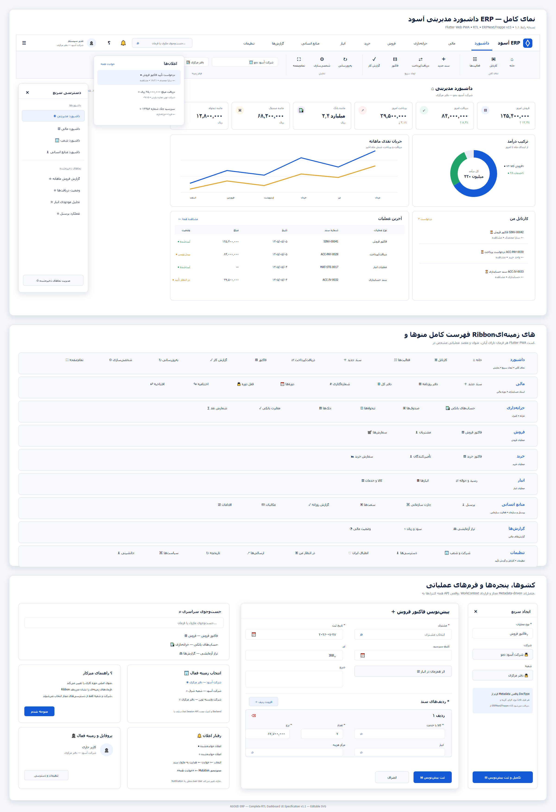
نمای داشبورد پس از احراز هویت و انتخاب زمینه
وضعیت: عملیاتی احراز هویت توسط Frappe/ERPNext انجام میشود.
۱نشانی سامانه را باز کنید و نام کاربری و رمز عبور سازمانی را وارد کنید.
۲پس از ورود، از نوار بالای سامانه شرکت فعال را انتخاب کنید.
۳اگر دسترسی شعبه دارید، شعبه فعال را نیز تعیین کنید. تمام اطلاعات بعدی در همین زمینه ذخیره میشوند.
۴با ورود موفق، داشبورد اصلی بهصورت خودکار بارگذاری میشود.
مهم: قبل از ایجاد سال مالی، حساب یا تفصیلی، نام شرکت فعال در بالای صفحه را کنترل کنید.
مرحله ۲
داشبورد اصلی و ریبون فرمانها
معرفی صفحه: داشبورد، میزکار روزانه کاربر و نقطه ورود به همه ماژولهاست.
منوی اصلیزمینه شرکت/شعبهریبون فرمانهاکارتهای آماریاعلان و کارتابل
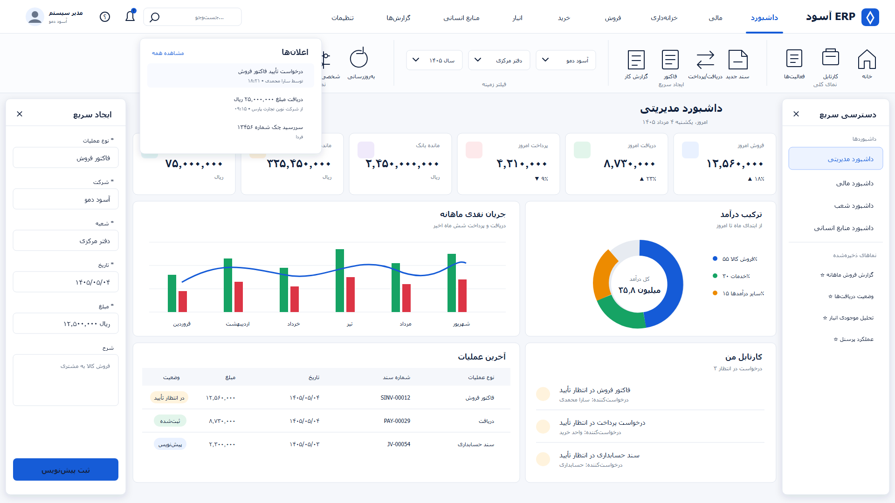
ریبون زمینهای، کارتهای آماری و ابزارهای سریع
| دکمه یا بخش | کاربرد |
|---|
| منوی اصلی بالا | انتخاب حوزه کاری مانند مالی، خزانه، فروش، خرید، انبار، منابع انسانی و تنظیمات. |
| شرکت / شعبه | تغییر زمینه فعال؛ دادههای صفحه دوباره با مجوز همان زمینه بارگذاری میشوند. |
| جستوجو | جستوجوی ماژول یا فرمان و انتقال مستقیم به مقصد. |
| دسترسی سریع | بازکردن نماهای پرکاربرد و ذخیرهشده. |
| علامت + | ایجاد سریع سند از قراردادهای مجاز. |
| زنگ اعلان | نمایش اعلانها و انتقال به سند مرتبط. |
| کارتابل | مشاهده موارد در انتظار تأیید. |
| راهنما / پروفایل | راهنمای میزکار، اطلاعات کاربر و دسترسی به تنظیمات. |
مسیر این راهنما: منوی اصلی ← تنظیمات ← داشبورد تنظیمات.
صفحه نهایی کارتابل
نمای اصلی کارتابل و گردش تأیید
معرفی صفحه: این صفحه مرکز مشاهده و اقدام روی درخواستهای تأیید است و پنج نمای مستقل را در یک محیط نشان میدهد.
کارتابل منارسالیهاتاریخچهمسیرهای تأییدکاربران و دسترسی
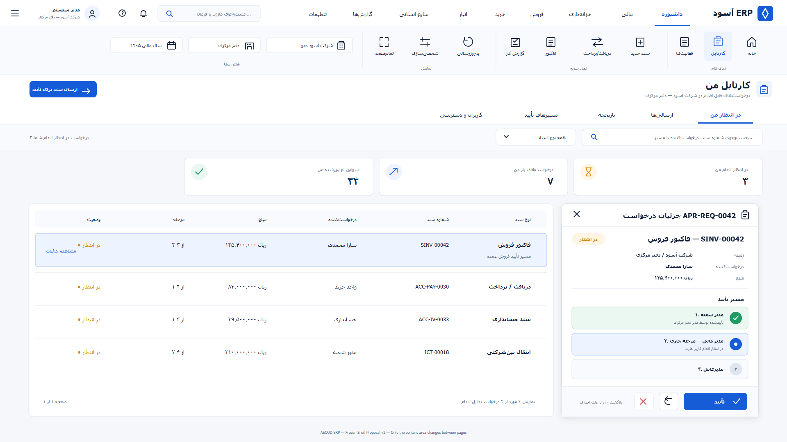
پوسته نهایی کارتابل هماهنگ با داشبورد اصلی
قسمتهای صفحه
- نوار نماها: جابهجایی مستقیم میان پنج بخش کارتابل.
- جستوجو: شماره سند، درخواستکننده یا مسیر تأیید.
- فیلتر وضعیت: در انتظار، تأییدشده، ردشده، بازگشتی یا باطلشده.
- شمارندهها: تعداد ورودی، درخواست باز و سابقه نهایی.
- جدول: فهرست درخواستها با مبلغ، مرحله و وضعیت.
راهنمای استفاده
- از منوی اصلی کارتابل را انتخاب کنید.
- نمای موردنظر را از نوار بالای صفحه بزنید.
- با جستوجو و فیلتر، ردیف موردنظر را پیدا کنید.
- روی ردیف کلیک کنید تا جزئیات باز شود.
کارتابل من
درخواستهای در انتظار اقدام من
معرفی صفحه: فقط درخواستهایی نمایش داده میشوند که کاربر جاری در مرحله فعلی اجازه اقدام روی آنها دارد.
شمارندههاجستوجوجدول ورودیپنل جزئیاتعملیات تصمیم
قسمتهای جدول
نوع و شماره سند، درخواستکننده، مبلغ، شماره مرحله و وضعیت جاری در هر ردیف دیده میشود.
راهنمای استفاده
۱در نوار کارتابل، کارتابل من را انتخاب کنید.
۲عبارت جستوجو را وارد و کلید جستوجو یا Enter را بزنید.
۳روی درخواست موردنظر کلیک کنید تا پنل جزئیات باز شود.
۴سند، مبلغ، درخواستکننده، سیاست و مراحل را کنترل کنید.
در نمای ورودی، فهرست براساس مجوز اقدام کاربر فیلتر میشود و امکان Self-approval در Backend کنترل میشود.
جزئیات درخواست
بررسی مسیر و ثبت تصمیم تأیید
معرفی صفحه: پنل جزئیات برای تصمیمگیری نهایی استفاده میشود و خلاصه سند، مسیر مرحلهای و سابقه اقدامات را کنار هم نشان میدهد.
خلاصه سندزمینه Company/Branchمسیر تأییدتاریخچه اقداماتتأیید/بازگشت/رد
| دکمه | نتیجه و روش استفاده |
|---|
| تأیید | درخواست را به مرحله بعد میفرستد یا در آخرین مرحله نهایی میکند. قبل از اقدام، اطلاعات سند را کنترل کنید. |
| بازگشت برای اصلاح | درخواست را با توضیح اجباری به درخواستکننده برمیگرداند. |
| رد | فرآیند را رد میکند؛ دلیل تصمیم باید ثبت شود. |
| بستن جزئیات | پنل را میبندد و فهرست بدون تغییر باقی میماند. |
ترتیب پیشنهادی کنترل
- نوع و شماره سند را با درخواست تطبیق دهید.
- زمینه شرکت و شعبه و مبلغ را بررسی کنید.
- مرحله فعال و تأییدکنندههای قبل را کنترل کنید.
- تاریخچه توضیحات را بخوانید و سپس تصمیم را ثبت کنید.
ارسالیها
درخواستهای ایجادشده توسط من
معرفی صفحه: این نما وضعیت درخواستهایی را دنبال میکند که کاربر جاری آغاز کرده است.
فیلتر وضعیتمرحله جاریتأییدکننده فعلیجزئیات مسیر
راهنمای استفاده
۱تب ارسالیها را انتخاب کنید.
۲از فیلتر وضعیت برای نمایش درخواستهای باز، تأییدشده، ردشده یا بازگشتی استفاده کنید.
۳روی ردیف کلیک کنید تا مرحله و شخص اقدامکننده فعلی مشخص شود.
۴اگر درخواست بازگشته است، سند مبدأ را اصلاح و دوباره وارد مسیر تأیید کنید.
تفاوت با کارتابل من: اینجا مالک درخواست هستید، نه الزاماً تأییدکننده مرحله.
تاریخچه کارتابل
سوابق نهاییشده و اقدامات ثبتشده
معرفی صفحه: تاریخچه برای پیگیری تصمیمهای گذشته و مشاهده مسیر کامل درخواستهای خاتمهیافته است.
جستوجوی سابقهفیلتر نتیجهزمان اقدامعامل اقدامتوضیحات
قسمتهای صفحه
فهرست اسناد نهاییشده، وضعیت نهایی، آخرین مرحله و اطلاعات درخواستکننده نمایش داده میشود. با بازکردن هر ردیف، تمام اقدامات مرحلهای قابل مشاهده است.
راهنمای استفاده
- تب تاریخچه را باز کنید.
- نتیجه موردنظر را از فیلتر وضعیت انتخاب کنید.
- شماره سند یا نام درخواستکننده را جستوجو کنید.
- ردیف را باز و زمان، عامل و توضیح هر اقدام را بررسی کنید.
این صفحه فقط برای مشاهده و حسابرسی است و دکمه تصمیمگیری فعال ندارد.
مدیریت کارتابل
مسیرهای تأیید و کاربران دارای دسترسی
معرفی صفحه: مدیر سیستم از این دو نما سیاستهای گردش و دامنه دسترسی کاربران را کنترل میکند.
کاتالوگ سیاستهامراحل و نقشهاحد مبلغCompany/Branchزمانبندی دسترسی
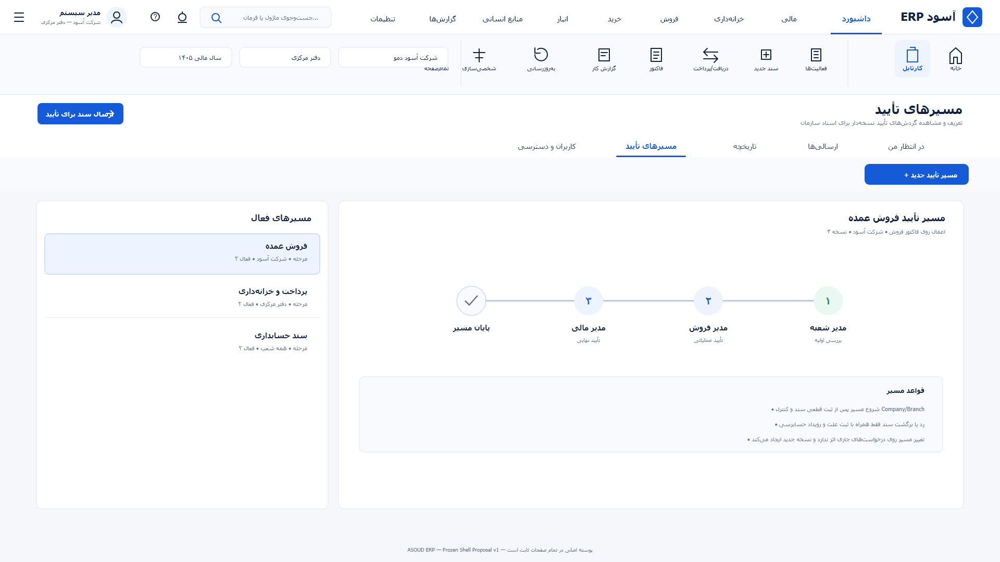
مسیرها، مراحل و نقشهای تأیید
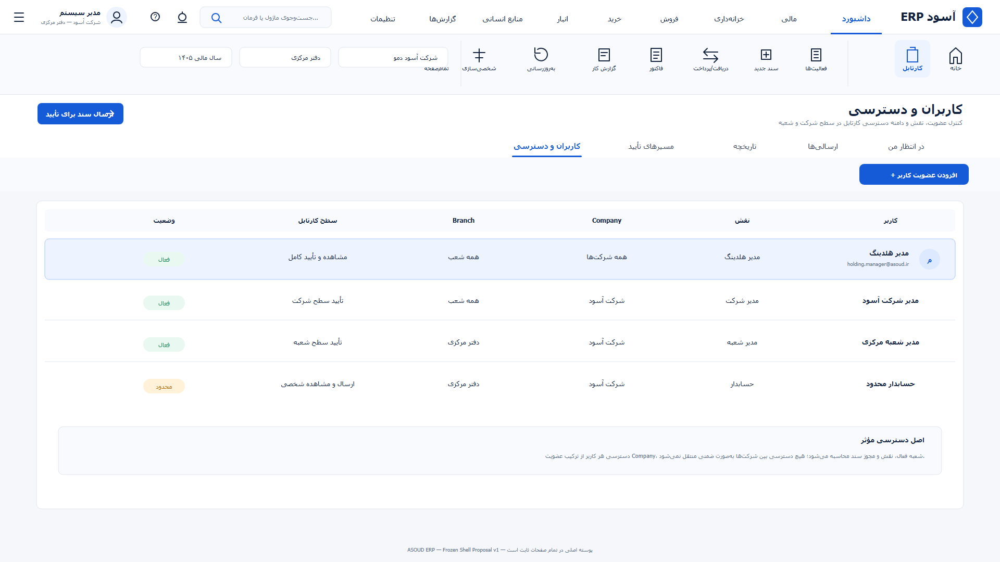
دامنه دسترسی Company/Branch
| بخش | راهنمای استفاده |
|---|
| مسیرهای تأیید | سیاست را انتخاب و ترتیب مراحل، نقش تأییدکننده، محدوده مبلغ و فعالبودن مسیر را بررسی کنید. |
| کاربران و دسترسی | کاربر را پیدا، Company/Branch مجاز و بازه زمانی دسترسی را تعیین و ذخیره کنید. |
| جانشینی | فرمان جانشینی از ریبون کارتابل به نمای دسترسی هدایت میشود؛ بازه جانشینی باید محدود و قابل حسابرسی باشد. |
مرحله ۳
ورود به تنظیمات پایه
معرفی صفحه: درگاه ورود مدیر سیستم به تنظیمات سازمان، مالی، دسترسی و کنترل.
ریبون تنظیماتتنظیمات سازمانیتنظیمات مالیکنترل و دسترسی
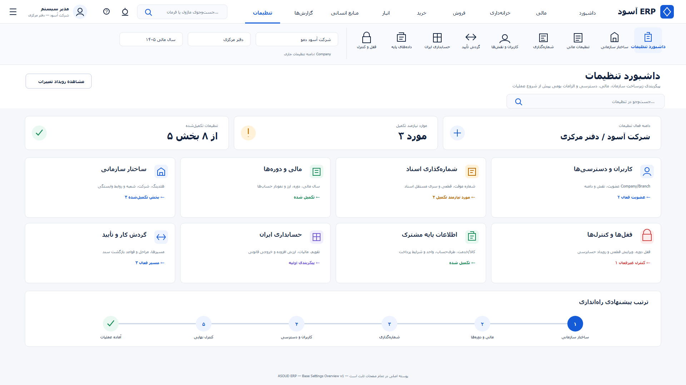
نمای کلی تنظیمات پایه و مسیرهای در دسترس
دو مسیر ورود
- از منوی اصلی، حوزه تنظیمات را انتخاب کنید.
- در ریبون، یکی از فرمانهای داشبورد تنظیمات، ساختار سازمانی یا تنظیمات مالی را بزنید.
| فرمان | صفحه بعد |
|---|
| داشبورد تنظیمات | کارتهای وضعیت و میانبرهای تنظیمات. |
| ساختار سازمانی | درخت هلدینگ ← شرکت ← شعبه. |
| تنظیمات مالی | عمومی، نمودار حسابها و تفصیلیهای شناور. |
| شمارهگذاری | مسیر ماژول انتقال به بخش مرتبط حسابداری ایران. |
| کاربران، گردش تأیید و کنترل | مسیر ماژول از منوی اصلی سامانه باز میشوند. |
مرحله ۴
داشبورد تنظیمات
معرفی صفحه: خلاصه وضعیت پیکربندی و میانبر ورود به صفحات عملیاتی تنظیمات.
شمار واحدهاکارتهای تنظیماتتبهای اصلیواحد سازمانی جدید
در بالای صفحه سه تب ثابت وجود دارد:
| دکمه | نتیجه |
|---|
| داشبورد تنظیمات | شمار هلدینگها، شرکتها، شعب و کارتهای میانبر را نشان میدهد. |
| ساختار سازمانی | ساختار درختی واحدها را باز میکند. |
| تنظیمات مالی | تنظیمات شرکت فعال را باز میکند. |
| واحد سازمانی جدید | پنجره انتخاب نوع هلدینگ، شرکت/شخص یا شعبه را باز میکند. |
کارت ساختار سازمانی و کارت مالی و دورهها قابل کلیک هستند. کارتهایی که عبارت «از منوی اصلی سامانه» دارند، از ریبون اصلی باز میشوند.
مرحله ۵
انتخاب نوع واحد سازمانی
معرفی صفحه: پنجره تعیین نوع موجودیتی که باید ایجاد شود؛ انتخاب اینجا تعداد و محتوای مراحل بعدی را مشخص میکند.
هلدینگشرکت یا شخصشعبهانصراف
۱روی واحد سازمانی جدید کلیک کنید.
۲یکی از سه نوع زیر را انتخاب کنید:
| انتخاب | فرم بعدی |
|---|
| هلدینگ | فرم سهمرحلهای هویت، تلفیق و بازبینی. |
| شرکت یا شخص | فرم چهارمرحلهای؛ نوع شخصیت حقیقی یا حقوقی در مرحله اول تعیین میشود. |
| شعبه | فرم چهارمرحلهای هویت، منابع، دسترسی و بازبینی. |
انصراف پنجره را بدون ذخیره میبندد. دکمه بعدی فقط پس از تکمیل فیلدهای الزامی فعال/موفق خواهد بود.
ایجاد هلدینگ
هلدینگ: از فهرست تا ثبت نهایی
معرفی صفحه: فرم سهمرحلهای ایجاد بالاترین سطح سازمانی و تنظیم مبانی گزارش تلفیقی.
هویتتنظیمات تلفیقبازبینیثبت نهایی
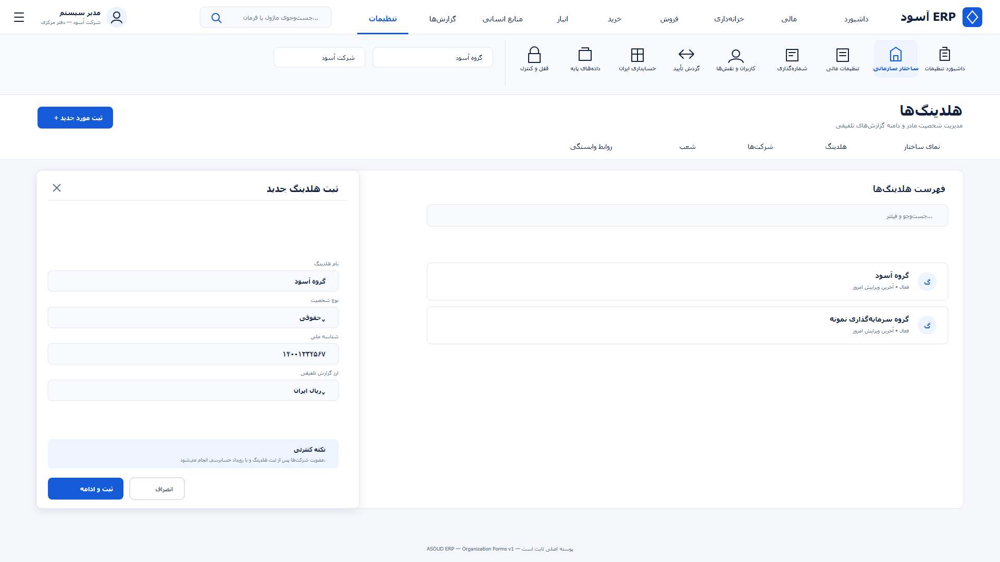
مرحله هویت و ایجاد هلدینگ
مرحله ۱ — هویت
نام هلدینگ، کد یکتا و اطلاعات پایه را وارد کنید و بعدی را بزنید.
مرحله ۲ — تلفیق
ارز و روش تلفیق و تنظیمات حذف معاملات درونگروهی را کنترل کنید.
مرحله ۳ — بازبینی
خلاصه اطلاعات را در تصویر بازبینی بررسی کنید.
قبلی: بازگشت بدون از دست رفتن اطلاعات.
ثبت/ذخیره: ایجاد هلدینگ و بازگشت به داشبورد تنظیمات.
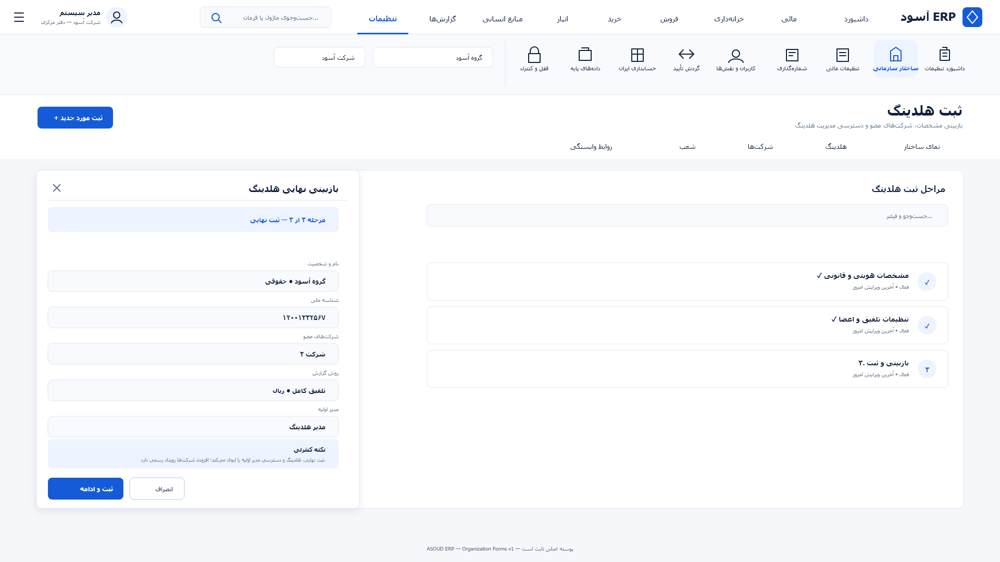
ایجاد شرکت حقوقی
شرکت: مرحله هویت و ارتباط سازمانی
معرفی صفحه: دو مرحله اول برای تعریف شخصیت شرکت و جایگاه آن در هلدینگ استفاده میشود.
نوع شخصیتشناسههای قانونیهلدینگ والدرابطه سازمانی
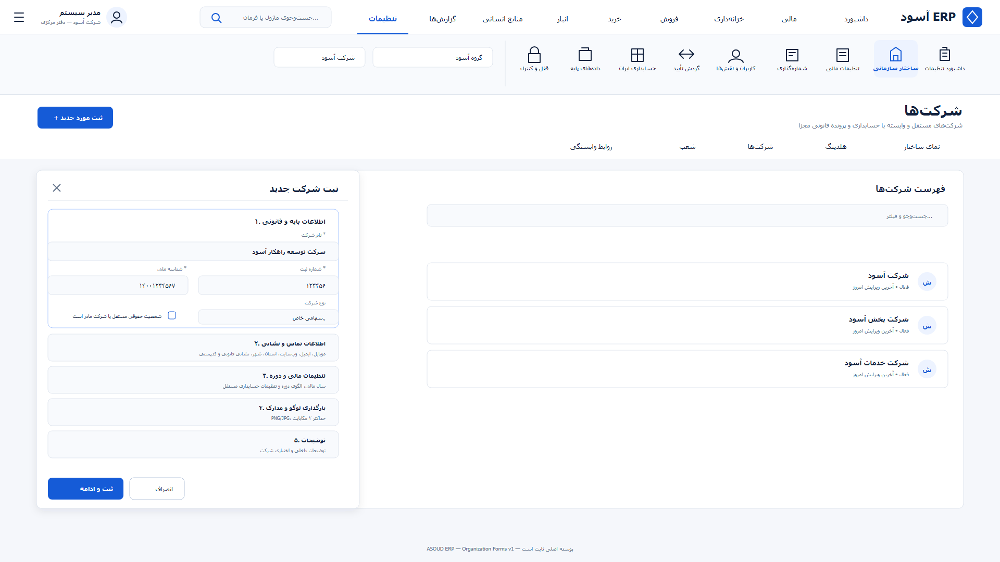
مرحله اول: مشخصات شرکت و نوع شخصیت
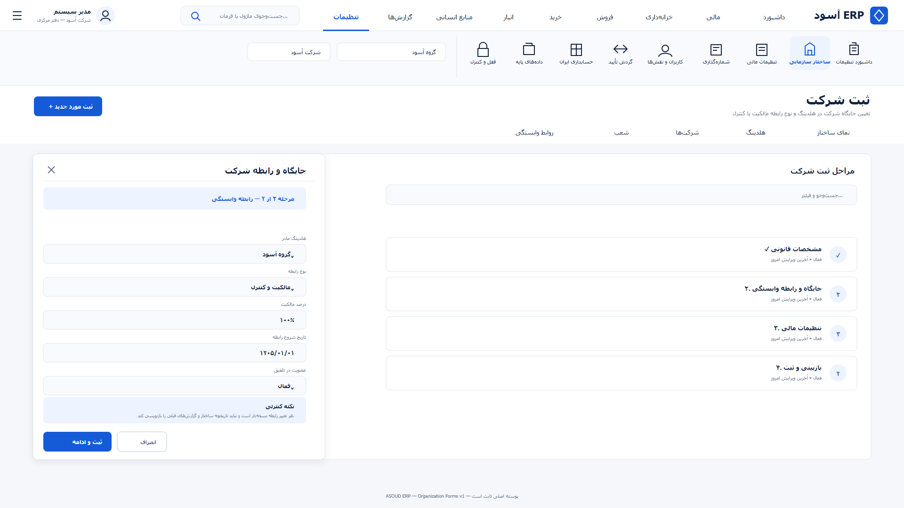
مرحله دوم: ارتباط با هلدینگ و زمینه سازمانی
| مرحله | کار کاربر | دکمه بعدی |
|---|
| هویت | نوع شخصیت حقوقی، نام شرکت، کد، شناسهها و اطلاعات الزامی را وارد کنید. | بازکردن مرحله ارتباط. |
| ارتباط | هلدینگ والد و رابطه سازمانی را انتخاب کنید. | بازکردن مرحله حسابداری. |
| قبلی | برای اصلاح اطلاعات مرحله قبل استفاده میشود. | اطلاعات واردشده حفظ میشوند. |
ایجاد شرکت حقوقی
شرکت: حسابداری و بازبینی
معرفی صفحه: دو مرحله پایانی برای تعیین تنظیمات اولیه حسابداری و کنترل همه دادهها پیش از ثبت Company است.
ارز قانونیالگوی حسابتنظیم مالی اولیهخلاصه ثبت
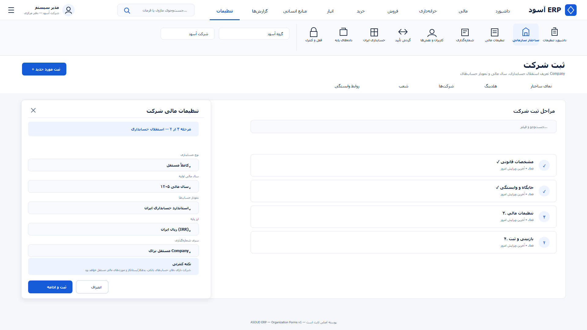
مرحله سوم: تنظیمات اولیه حسابداری
مرحله چهارم: کنترل و ثبت نهایی
مرحله ۳ — حسابداری
- ارز قانونی دفتر کل ایران روی IRR کنترل میشود.
- الگوی نمودار حسابها و تنظیمات مالی اولیه را انتخاب کنید.
- با بعدی به صفحه بازبینی بروید.
مرحله ۴ — ثبت
- خلاصه همه مراحل را کنترل کنید.
- ثبت شرکت اطلاعات را به Backend ارسال میکند.
- ثبت تکراری با کلید idempotency کنترل میشود.
مسیر جایگزین شرکت
ایجاد شخص حقیقی
معرفی صفحه: همان جریان چهارمرحلهای شرکت با فیلدهای هویتی متناسب با شخص حقیقی.
مشخصات فردیکد ملیرابطه سازمانیتنظیمات مالی
در مرحله اول «شرکت یا شخص»، نوع شخصیت را روی حقیقی قرار دهید. فرم بهصورت خودکار فیلدهای مناسب شخص را نمایش میدهد.
۱نام، نام خانوادگی، کد ملی و اطلاعات پایه را وارد کنید.
۲در مرحله ارتباط، هلدینگ یا رابطه سازمانی را تعیین کنید.
۳تنظیمات مالی اولیه را بررسی کنید.
۴در بازبینی نهایی، ثبت را بزنید.
دکمههای بعدی و قبلی همان رفتار مسیر شرکت حقوقی را دارند؛ فقط فیلدهای هویتی تغییر میکنند.
ایجاد شعبه
شعبه: هویت و منابع
معرفی صفحه: دو مرحله اول برای اتصال شعبه به شرکت مادر و تعریف منابع عملیاتی اختصاصی آن.
شرکت مادرکد شعبهمنابع عملیاتیانبار و صندوق
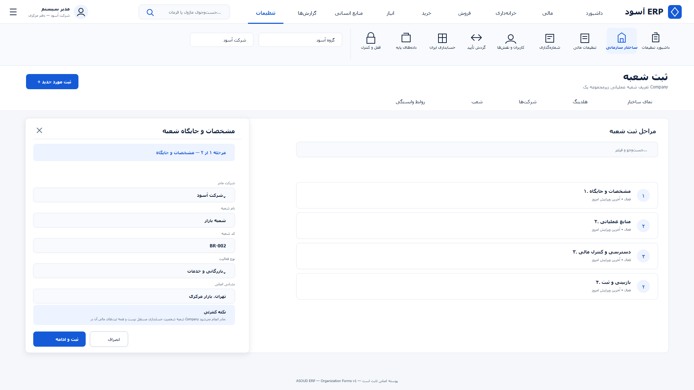
مرحله اول: مشخصات شعبه و شرکت مادر
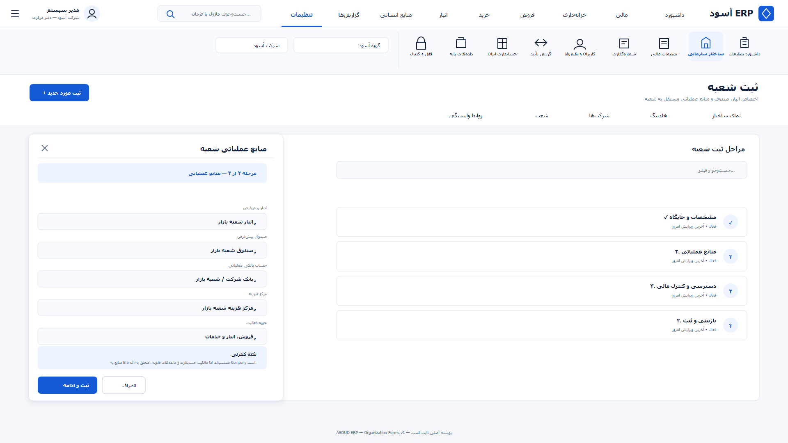
مرحله دوم: منابع و تنظیمات عملیاتی
| مرحله | آموزش استفاده |
|---|
| هویت | شرکت مادر، نام شعبه، کد و مشخصات پایه را تعیین کنید. |
| منابع | منابع عملیاتی مانند انبار، صندوق یا تنظیمات موردنیاز شعبه را بررسی کنید. |
| بعدی | پس از اعتبارسنجی، مرحله دسترسی را باز میکند. |
حسابداری قانونی شعبه از شرکت مادر ارثبری میشود؛ برای شعبه دفتر کل مستقل جدید ایجاد نکنید.
ایجاد شعبه
شعبه: دسترسی و بازبینی
معرفی صفحه: دو مرحله پایانی برای تعیین دامنه کاربران شعبه و ثبت نهایی آن.
کاربراننقشهادامنه Branchبازبینی و ثبت
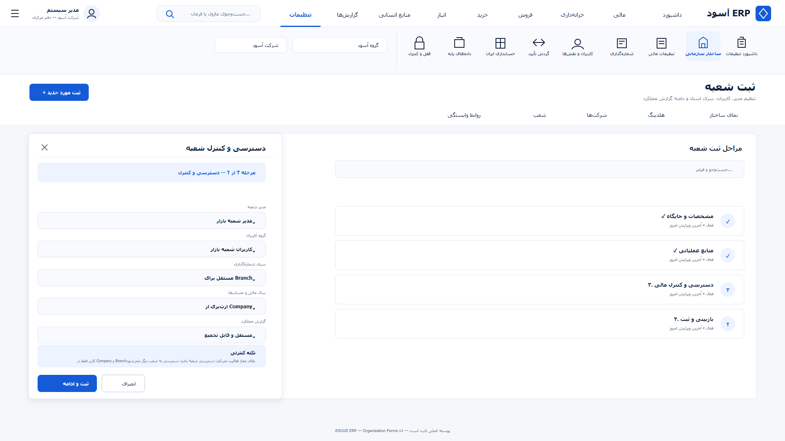
مرحله سوم: کنترل دسترسیها
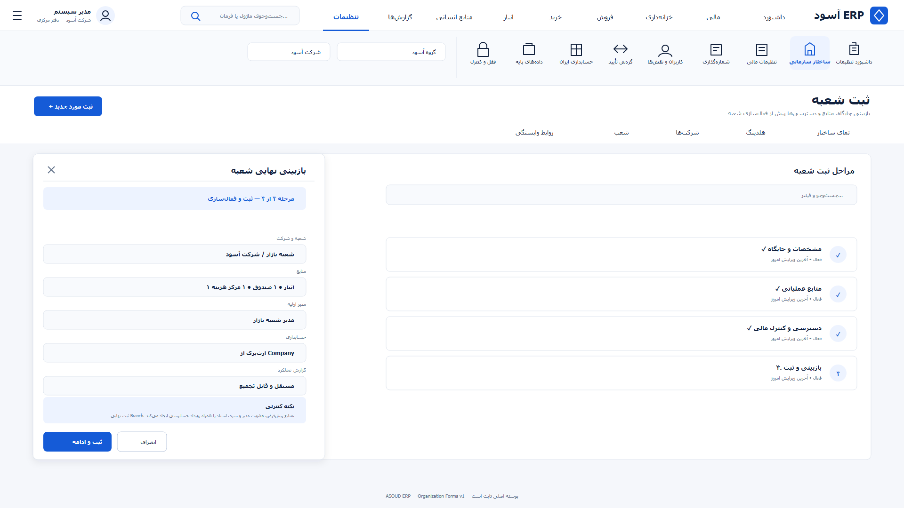
مرحله چهارم: بازبینی و ثبت
دسترسی
دامنه کاربران و نقشهایی را که باید به شعبه دسترسی داشته باشند کنترل کنید و بعدی را بزنید.
بازبینی
شرکت مادر، کد شعبه، منابع و دسترسیها را بررسی کرده و ثبت شعبه را بزنید.
مرحله ۶
مشاهده ساختار سازمانی
معرفی صفحه: نمای درختی ارتباط هلدینگ، شرکت و شعبه برای کنترل ساختار ثبتشده.
هلدینگشرکتشعبهباز و بستهکردن شاخهها
۱تب ساختار سازمانی را از بالای تنظیمات انتخاب کنید.
۲روی ردیف هلدینگ کلیک کنید تا شرکتهای زیرمجموعه باز یا بسته شوند.
۳روی شرکت کلیک کنید تا شعب زیرمجموعه آن نمایش داده شوند.
| نماد | معنی |
|---|
| هلدینگ | ریشه گزارش تلفیقی و مالک شرکتها. |
| شرکت | Company مستقل با دفتر و تنظیمات مالی مستقل. |
| شعبه | واحد عملیاتی با ارثبری حسابداری از شرکت. |
برای افزودن واحد جدید لازم نیست از این صفحه خارج شوید؛ دکمه واحد سازمانی جدید در سربرگ همیشه در دسترس است.
مرحله ۷
تنظیمات عمومی مالی شرکت
معرفی صفحه: تنظیمات پایه دفتر مالی Company فعال که مبنای نمایش و ثبت عملیات بعدی است.
شرکت و ارزالگوی نمودار حسابریال/تومانتقویم و منطقه زمانی
۱تب تنظیمات مالی و سپس بخش عمومی را باز کنید.
۲الگوی نمودار حسابها را انتخاب کنید.
۳واحد ورود مبلغ را ریال یا تومان و نمایش تقویم را شمسی یا میلادی تعیین کنید.
۴روی ذخیره تنظیمات مالی کلیک کنید.
| فیلد | قاعده |
|---|
| شرکت فعال | فقط خواندنی؛ همان زمینه بالای سامانه است. |
| ارز دفتر کل | برای حسابداری ایران روی IRR کنترل میشود. |
| واحد ورود | در صورت انتخاب تومان، ذخیره دفتر کل همچنان به ریال است. |
سال مالی
ایجاد و ویرایش سال مالی
معرفی صفحه: تعریف محدوده قانونی گزارشگیری مالی شرکت و پایه ایجاد دورههای مالی.
عنوان سالتاریخ شروعتاریخ پایانشرکتهای مجاز
۱در بخش عمومی مالی، از کارت سالهای مالی دکمه افزودن را بزنید.
۲عنوان، تاریخ شروع و پایان و وضعیت سال را وارد کنید.
۳در صورت نیاز، شرکت فعال را به سال مالی متصل نگه دارید.
۴روی ذخیره کلیک کنید. ردیف جدید در کارت سالهای مالی ظاهر میشود.
عملیاتی ایجاد و ویرایش سال مالی به `Fiscal Year` متصل است.
قبل از ایجاد دوره مالی، سال مالی مربوطه باید موجود باشد.
دوره مالی
فهرست دورهها و فرم ایجاد دوره
معرفی صفحه: تقسیم سال مالی به بازههای استاندارد یا تعدیلاتی برای گزارشگیری و کنترل عملیات.
فهرست دورههادوره استاندارددوره تعدیلاتیایجاد و ویرایش
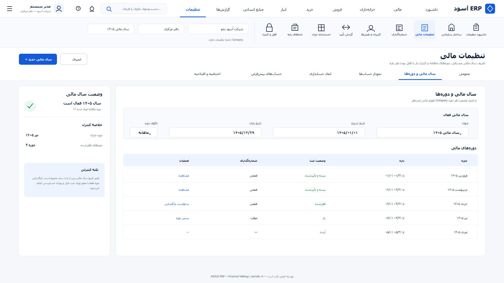
کارت دورهها و عملیات هر ردیف
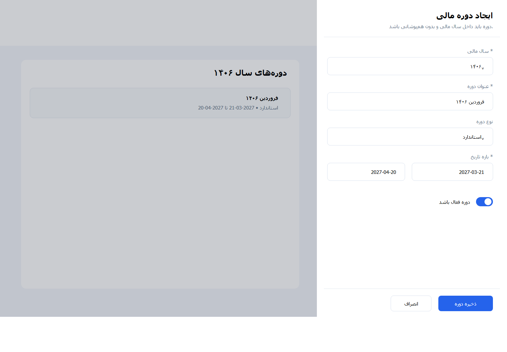
فرم تأییدشده ایجاد/ویرایش دوره
| دکمه | نتیجه |
|---|
| + دوره مالی | فرم ایجاد دوره را باز میکند. |
| ویرایش ردیف | همان فرم را با اطلاعات دوره انتخابشده باز میکند. |
| ذخیره | دوره استاندارد یا تعدیلاتی را پس از کنترل تاریخها ثبت میکند. |
| انصراف | فرم را بدون ثبت تغییرات میبندد. |
تاریخ دوره باید کاملاً داخل سال مالی باشد و دورههای فعال همنوع نباید همپوشانی داشته باشند.
کنترل دوره
قفل و بازگشایی کنترلشده دوره
معرفی صفحه: جلوگیری از ثبت یا اصلاح سند در بازه نهاییشده و بازگشایی حسابرسیشده در شرایط مجاز.
انتخاب بازهدلیل اجباریقفلبازگشاییAudit
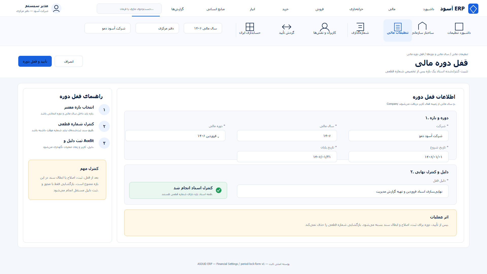
قفل دوره همراه با دلیل اجباری
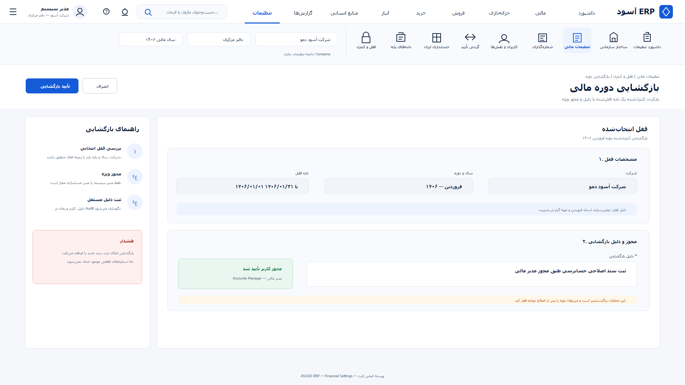
بازگشایی کنترلشده و ثبت در زنجیره حسابرسی
قفل دوره
دوره یا بازه را انتخاب، دلیل را وارد و قفل را بزنید. فقط وقتی مجاز است که اسناد بازه شماره قطعی داشته باشند.
بازگشایی
روی عملیات بازگشایی ردیف قفلشده بزنید، دلیل جدید را وارد و بازگشایی را تأیید کنید.
بازگشایی شماره قطعی اسناد را حذف نمیکند؛ کاربر، زمان و دلیل عملیات در Audit باقی میماند.
مرحله ۸
نمودار درختی حسابها
معرفی صفحه: نمایش سلسلهمراتب حسابهای Company و نقطه ایجاد یا ویرایش حساب در هر سطح.
درخت حسابسطح گروه/کل/معینزیرحسابهمسطحویرایش
۱در تنظیمات مالی، بخش نمودار حسابها را انتخاب کنید.
۲برای ویرایش، روی ردیف حساب یا آیکون مداد کلیک کنید.
| دکمه هر ردیف | رفتار |
|---|
| زیرحساب | فرم جدید را با والد همان ردیف باز میکند؛ زیر گروه، سطح کل و زیر کل، سطح معین پیشنهاد میشود. |
| همسطح | فرم جدید را با همان والد و همان سطح باز میکند. |
| ویرایش | فرم یکپارچه را با اطلاعات حساب باز میکند. |
| حساب جدید | فرم خالی را باز میکند تا سطح و والد را دستی انتخاب کنید. |
برچسب هر ردیف سطح گروه، کل یا معین را نشان میدهد.
فرم حساب
ایجاد گروه، کل و معین در یک فرم
معرفی صفحه: فرم واحد ثبت تمام سطوح حساب با کنترل خودکار سندپذیری و قواعد تفصیلی.
سطح حسابوالدکد و عنواننوع حسابگروههای تفصیلی
۱سطح حساب را از بین گروه، کل و معین انتخاب کنید.
۲حساب والد، کد عددی یکتا، عنوان و در صورت نیاز نوع حساب را وارد کنید.
۳برای حساب معین، گروههای تفصیلی مجاز را تیک بزنید.
۴روی ذخیره حساب کلیک کنید.
| سطح | سندپذیری | زیرحساب |
|---|
| گروه | خیر | کل |
| کل | خیر | معین |
| معین | بله | ندارد |
گروه تفصیلی فقط برای سطح «معین» قابل انتخاب است.
مرحله ۹
مدیریت تفصیلیهای شناور
معرفی صفحه: مرکز مدیریت دستهبندی تفصیلیها و رکوردهای قابل استفاده در اسناد حسابداری.
گروههای تفصیلیتفصیلیهانوع تفصیلیوضعیت Company
۱در تنظیمات مالی، بخش تفصیلیهای شناور را باز کنید.
۲ابتدا گروه تفصیلی را ایجاد کنید؛ سپس اشخاص/موارد تفصیلی را داخل گروه ثبت کنید.
| دکمه | صفحه بعد |
|---|
| گروه تفصیلی جدید | فرم عنوان، کد، نوع و گروه والد را باز میکند. |
| تفصیلی جدید | فرم کد، عنوان، نوع، گروه و وضعیت شرکت را باز میکند. |
| ویرایش ردیف | فرم همان موجودیت را با اطلاعات فعلی باز میکند. |
گروهها ساختار دستهبندی هستند؛ خود تفصیلی میتواند مشتری، تأمینکننده، کارمند، بانک، صندوق، پروژه، مرکز هزینه یا شعبه باشد.
تفصیلی شناور
ایجاد گروه و ایجاد تفصیلی
معرفی صفحه: دو فرم مستقل؛ اولی ساختار گروهبندی و دومی خود رکورد تفصیلی را ایجاد میکند.
کد و عنوان گروهگروه والدکد تفصیلینوع و وضعیت
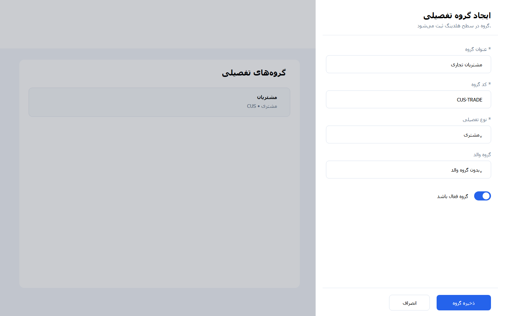
فرم تأییدشده گروه تفصیلی
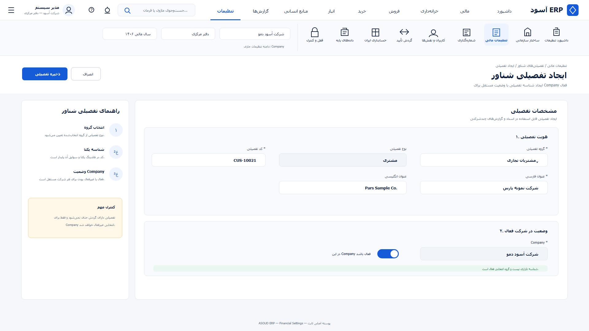
فرم تأییدشده تفصیلی شناور
گروه تفصیلی
- عنوان و کد یکتا را وارد کنید.
- نوع تفصیلی را انتخاب کنید.
- در صورت ساخت زیرگروه، گروه والد را تعیین کنید.
- ذخیره را بزنید.
تفصیلی
- نوع و گروه را انتخاب کنید.
- کد و عنوان را وارد کنید.
- وضعیت استفاده در شرکت فعال را تعیین کنید.
- ذخیره را بزنید.
اتصال حساب و تفصیلی
انتخاب گروههای تفصیلی داخل حساب معین
معرفی صفحه: تعیین میکند هنگام ثبت سند با یک حساب معین، تفصیلیهای کدام گروهها قابل انتخاب باشند.
حساب معینانتخاب چندگانه گروههااجباری/اختیاریکنترل Backend
صفحه جداگانهای برای اتصال حساب به گروه تفصیلی وجود ندارد. این کار داخل همان فرم حساب معین انجام میشود.
۱حساب معین را ایجاد یا ویرایش کنید.
۲در بخش گروههای تفصیلی مجاز هر تعداد گروه لازم را تیک بزنید.
۳حساب را ذخیره کنید؛ قواعد همراه همان حساب ثبت میشوند.
۴در سند حسابداری، پس از انتخاب این حساب فقط تفصیلیهای عضو گروههای مجاز نمایش داده میشوند.
Backend انتخاب تفصیلی خارج از گروههای مجاز یا خارج از Company فعال را رد میکند.
ادامه مسیر محصول
صفحات بعدی و وضعیت فعلی آنها
برای جلوگیری از برداشت اشتباه، صفحات عملیاتی و طرحهای برش بعدی جدا شدهاند.
| صفحه | وضعیت | مسیر یا رفتار |
|---|
| تنظیمات عمومی مالی | عملیاتی | تنظیمات مالی ← عمومی |
| سال و دوره مالی | عملیاتی | کارتهای صفحه عمومی مالی |
| قفل و بازگشایی دوره | عملیاتی | عملیات کارت قفلهای دوره |
| نمودار و فرم یکپارچه حساب | عملیاتی | تنظیمات مالی ← نمودار حسابها |
| گروه و تفصیلی شناور | عملیاتی | تنظیمات مالی ← تفصیلیهای شناور |
| اتصال حساب معین به گروه تفصیلی | عملیاتی | داخل فرم حساب معین |
| حسابهای پیشفرض | طراحی بعدی | طرح تصویری موجود؛ عملیات کامل در برش بعدی |
| شمارهگذاری و اختتامیه/افتتاحیه | طراحی بعدی | از ماژول حسابداری ایران قابل مشاهده؛ فرم اجرایی کامل بعداً |
| ابعاد حسابداری مستقل | طراحی بعدی | اتصال گروه تفصیلی از این صفحه حذف و به فرم حساب منتقل شده است |
تصاویر طرحهای بعدی در پروژه نگهداری شدهاند، اما در این راهنما فقط صفحات تأییدشده و مسیرهای فعلی مبنا قرار گرفتهاند.
مرور سریع
چکلیست استفاده صحیح
قبل از هر عملیات، شرکت و شعبه فعال را کنترل کنید.
ابتدا هلدینگ، سپس شرکت و در پایان شعبه را بسازید.
پس از ساخت واحدها، ساختار سازمانی را بازبینی کنید.
الگوی حساب و تنظیمات عمومی مالی را ذخیره کنید.
سال مالی را قبل از دوره مالی ایجاد کنید.
از همپوشانی دورههای همنوع جلوگیری کنید.
قبل از قفل دوره، شماره قطعی اسناد را کنترل کنید.
حساب گروه و کل را غیرسندپذیر نگه دارید.
فقط حساب معین را به گروههای تفصیلی متصل کنید.
ابتدا گروه تفصیلی و سپس خود تفصیلی را بسازید.
برای ساخت سریع حساب، از زیرحساب یا همسطح استفاده کنید.
پس از ذخیره، نتیجه را در فهرست یا نمودار کنترل کنید.
مسیر پیشنهادی راهاندازی اولیه
ورود ← انتخاب Company/Branch ← تنظیمات ← ساخت واحدها ← ساختار سازمانی ← تنظیمات عمومی مالی ← سال مالی ← دوره مالی ← گروههای تفصیلی ← نمودار حسابها ← اتصال حسابهای معین ← کنترل نهایی
نسخه HTML این سند برای مشاهده تعاملی و نسخه PDF برای چاپ و بایگانی تهیه شده است.